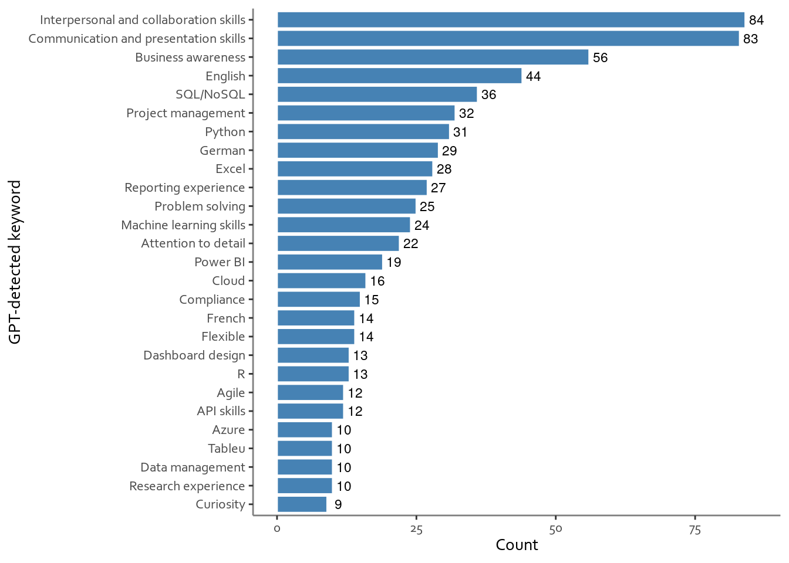

As some of you may know, I am looking for a job, with something in data analytics being one of the possibilities. Now, there is a lot of advice out there when it comes to job hunting and the big one is tailoring your CV to whatever job you’re applying to. Indeed, with the advent of easy-to-access LLMs there are now tools to automate the process (Teal comes to mind). However, there is also another big lot of advice and that is that a lot of jobs never make it to the job board and that it is often best to work with a recruiter. Which also includes a CV, but this time with no hints as to how to tailor it.
So I thought, how about working out what the average, generic data analyst job description looks like - what are the skills and tasks that come up most often. Given that I was thinking of going for a data analyst role, it was only fitting to approach the problem using data. Here is what I found in the process.
How to get the data? (aka the method section)
From the get go the big problem was how to get the data. Now in principle I could sit down in front of Indeed, Glassdoor, or some other Linked In and start going through adverts for where I live - which happens to be western Switzerland. Now, this approach has a couple big drawbacks, the biggest being that it is slow. The second biggest being that it also introduces a lot of subjectivity. A slight variation would have been to paste the job descriptions into a file and then try to process them somehow - still slow and now I have a massive NLP exercise to deal with. Instead of doing all those things, I approached the problem from a more technical angle (consult the figure for the TLDR version).
The key was to get API access to job descriptions. There are a few services out there that offer that, however quite a few of them are paywalled. Still, where there is will to spend more than five minutes googling there is hope and thus I came across the Adzuna website. After a quick API refresher I was able to get a whole collection of recent job descriptions… except the API never had any job descriptions, only links to posts and snippets of the first however many words or symbols of a description. At that stage I quit for the day.
Coming back the next day, I approached the issue from a different angle. While the API didn’t give full job descriptions it did supply links to individual pages. That’s how the new plan got hatched: web scraping. After a few more refreshers (and a little while digging through Adzuna’s CSS selectors) I managed to get the scraping function to work. There was one hiccup in that some of the links were for external sites, but this was easy to determine and filter away from the links themselves.
Thus the last remaining task was to deal with extracting the information from job descriptions. Now, a year earlier that would have been messy to say the least. However, since then, accessible LLMs became a thing. Coming of the back of Isa Fulford’s and Andrew Ng’s course I used GPT 3.5 Turbo to do the work for me. The prompt of course requires some iterating, but the summarizing capacity of the LLM meant that the job descriptions could be iterated over fast. The workflow as a whole took a couple hours to execute and yielded 159 job descriptions posted in early July 2023. In principle the process could be faster, however I made sure to include multiple “sleeps” in the process - after all Open AI API can only be called so many times per minute and I also wanted to limit the impact of the webscrape on Adzuna to something akin to a well-caffeinated human clicking too much. With the data in hand visualization was all that was left.
I used R throughout, with a smattering of Python (wanted to check how R Studio’s Python side would behave). All code is attached at the end of the post and, if you’re interested, the actual work log can be found on my Github (apologies if some words might have evaded the profanity removal process prior to publishing).
Results
As you can see from the graph below there are some expected and some less-expected outcomes from the exercise.
Code
skills_df_url <-"https://raw.githubusercontent.com/pete-jacobsson/what_makes_a_data_analyst/main/skills_df.csv"skills_df <-read_csv(url(skills_df_url))skills_df |>head(28) |>mutate(term =as_factor(term) ) |>filter(term !="Analytics") |>### This category is largest - which makes sense, but we know it from the job description :)ggplot(aes(x =fct_infreq(term), y = count)) +geom_bar(stat ='identity', fill ="steelblue", color ="grey20") +coord_flip() +scale_x_discrete(limits = rev) +theme_bw() +theme(panel.grid.minor =element_blank(),panel.grid.major =element_blank(),panel.border =element_blank(),axis.line =element_line(colour ="grey50", size =0.5),text =element_text(family ="Corbel")#,#axis.text.x = element_text(angle = 45, vjust = 1, hjust=1, size = 9) ) +labs(x ="GPT-detected keyword",y ="Count" )

Let’s start with the obvious and the expected. First off the bat, in the sample of 159 job descriptions, keywords relating to core soft skills were most common, with GPT detecting both interpersonal skills and communication skills in over eighty descriptions each. These are followed by business awareness. Python and knowledge of SQL come up as the two core hard skills and languages follow an expected pattern, with English in the fourth position, and German and French trailing. German and French are to be expected, given that I was scraping a Swiss job board. Last, Excel is present as the third most in demand tech skill. While this may come across as a surprise to some, in the core data analytics space this can be expected - after all, there is Excel and then there is Excel with all the added VBA bells and whistles and the tool still sees heavy usage (there is a reason why there are R packages dedicated to generating Excel files).
Now let’s talk about the surprises. The first major item off the bat is the low value assigned to curiosity - less than ten of the job descriptions noted curiosity as a required or desirable characteristic for a data analyst post. As a friend of mine pointed out, at face value this makes no sense in a job which is all about digging deep into research questions. Yes, you can do it without a curious mind, but chances are you will not enjoy the job and you will not reach your full potential. Now, it is possible that curiosity features low on the requirements list because it is an untestable characteristic. After all, at the level of the initial application anyone can claim that they have an endless streak of curiosity and most of the time they will believe it. What would be more concerning is if the hiring teams don’t find curiosity an important characteristic in candidates and fail to evaluate for it throughout the application process.
Linked to this is the low ranking of both research experience and data management skills. All the same arguments repeated above apply: the core of an analysts job should be doing research, hence I would have expected research experience to score more hits. Likewise, data management is essential to keeping the pipelines healthy and preventing bad stuff from happening. As such we could expect it to show up more often, even if not as an essential part of the job.
The other item that surprised me was the continuing dominance of scripting languages over the out-of-the-box tools. Python is more sought after than Power BI and R is more sought after than Tableau. Hence, in this particular sample, knowing how to code goes a longer way towards fitting the job description than knowing how to use code-free data analytics tools. Furthermore, there are some other skills in there which suggest that hard technical skills, such as Cloud operations and API usage, may be sought after as part of a generic “data analyst” package. In other words, doing the Microsoft PL300 alone would be insufficient to match a job description generated from these findings only. Now, this may be a quirk of the search algorithm, but it does seem to demonstrate that in mid-2023 code is still important.
Conclusions
Code
Code
## Reproducing results will require the following libraries:library(httr)library(tidyverse)library(jsonlite)library(rvest)library(reticulate)